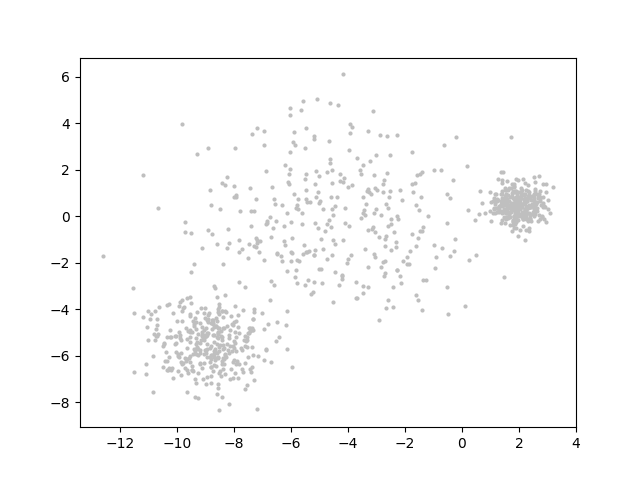

A Visual Journey in the K-Means Parameter Space
Towards a universal visualization strategy of parameter spaces in data analytics' algorithms
[J/ Figure 1: In this D3.js block we could show an interactive Phase Space plot choosing between different datasets, distances and seedings. Also on what is shown in the x and y axis. This will give a first idea of how the Phase Space changes and hence how the cartographies change too]
[J/ Then we introduce the topic (one sentence) and we go into a simple example: clustering of datapoint clouds. It must be noticed that the Distill paper "Why Momentum Really Works" never uses more than six text lines per paragraph to keep the flow going]
[J/ So we could start with something like:]
The use of algorithms are widespread nowadays on a broad variety of disciplines, particularly over the last years where the boost of big data analytics demands an intensive use of a diverse ecosystem of mathematical tools . Clustering algorithms, for instance, try to classify datasets into coherent groups. Starting on a distribution of datapoints such as the following:

[J/ Figure 2: A cloud of datapoints with a hint of three groups or clusters]
The K-means algorithm performs sequential iterations looking to minimise the distance among the datapoints belonging to a pre-defined number of groups or clusters. The algorithm converges consistenly for different initializations on three clusters or solutions:
[J/ Figure 3: Pathways of convergence of the K-means algorithm into solutions. I think we should go beyond the typical K-means animations of the actual clustering. Showing solutions in terms of absolute distance and cluster size straight away respects much more the assumed familiarity of the reader with mathematical concepts]
[J/ Then we briefly introduce the problem:]
However, the optimal pathways the algorithm follows depend on sometimes many parameters that have to be defined. These so-called configurations expand over a wide range of possibilities that have to be somehow explored.
[J/ And the solution:]
Data visualization techniques could help significantly in reducing the parameter space when the whole spectrum of potential solutions of an algorithm is analyzed.
We focus on the K-means clustering algorithm to explore different strategies on how to narrow down the parameter space that define the algorithm configuration, including datasets, initial conditions, constraints, etc...
But most important, we target the role of the human choices within this process in addition to the existing automated process to reduce the parameter space.
[J/ That would end the "abstract" part of the paper. As I mentioned above, I'm using the structure of "Why Momentum Really Work" as a template for ours]
[J/ Now we get deep into K-Means:]
The K-means algorithm
It represents one of the most used mathematical routine for cluster analysis nowadays.
The objective of the K-means algorithm is to distribute the input data into a discrete number of clusters K. For this, an initial position for the K centers is defined in the data space. The datapoints are associated with the nearest center, and the centroid for each of the K groups is calculated. The first iteration reassigns the datapoints which belong to each of the K clusters based on the centroids and recalculates the new centroids based on the new distribution of datapoints. Once there is no variation on the position of the centroids, the algorithm is assumed to have reached a solution. The initial datapoints are hence distributed into K clusters.
In the K-means algorithm we can define the parameter space and assign different variables to the input data, algorithm parameters and algorithm output. In this way the entirety of the parameter space can be described with all possible avenues the algorithm can explore.
[J/ Figure 4: This figure illustrates the input, output and algorithm pipelines. And how choices in the algorithm parameter space influences the output space. Originally the blue color was intended to show choices made automatically, and dark blue the choices ultimately made by the human on the subset selected by automatic processes]
[J/ Then we dive a bit deeper into theoretical concepts: ]
The parameter space
The parameter space is split into:
- Input data: Considering the aim of the algorithm, there is a prerequisite about the input data that assumes that a discrete number of groups exists in the original dataset. We can define the input data in the K-means algorithm as N elements distributed in a d-dimensional space. The number of dimensions d establishes the first parameter, where d = {1, ..., W }.
- Parameters:
In K-means it is necessary to define the K number of clusters as K = {1, ..., N }, where N is the number of datapoints and defines the range over which K can expand. As a consequence, there are intrinsic boundaries for the ratio between K and N, particularly K/N ∈ {1/N, 1}.
K-means is based on the optimization of the variance between datapoints and the K centers. The variance is based on the distance, and therefore the concept itself of distance is another variable that we can consider within the parameter space. Conventional K-means routines are based on the Euclidean distance. However, the algortihm gives room to the use of non-euclidean distances such as City Block as long as the variance is computed. There are other definition of distances that apply to the optimization process withing K-means
The parameter space regarding the intrinsic algorithm variables can be completed with the number of iterations. The number of iterations is given in K-means by the convergence of the algorithm towards a solution where the recalculation of the centroids provides the same number between two consecutive iterations.
- Output:
In the case of K-means, the output parameter space is mainly defined by the range of possible solutions in terms of:
- A number of iterations M for each possible solution. The K-means algorithm converges in all cases for this particular parameter the range over which spans is finite.
- A final distance F for the K clusters
- Number G of final distances F for different combinations of K within the Di partitions.
- Changing datapoints J among clusters in-between the M iterations. The range of J could be defined by J={0,...,N−1}.
[J/ I stop here as more sophisticated visualizations have to be developed for each individual parameter to move on]